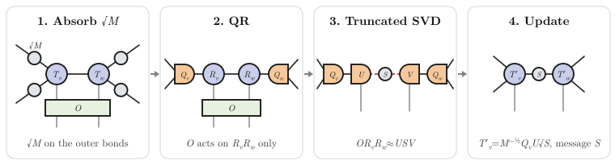

Gate Application
Building Circuits
A circuit is a Vector of gates to be applied sequentially. Each gate is specified as a tuple (gate_string, vertices, parameter) or (gate_string, vertices) if no parameter is associated with that gate. For gates that take more than one parameter (e.g. "xx_plus_yy"), pass a tuple: (gate_string, vertices, (θ, β)).
layer = []
# Single-site rotations
append!(layer, ("Rx", [v], 2 * hx * dt) for v in vertices(g))
append!(layer, ("Rz", [v], 2 * hz * dt) for v in vertices(g))
# Two-site gates, grouped by edge coloring for maximum BP update efficiency when using `apply_gates`
ec = edge_color(g, 4) # 4 = coordination number of the square lattice
for colored_edges in ec
append!(layer, ("Rzz", pair, 2 * J * dt) for pair in colored_edges)
endCircuits from qiskit (OpenQASM)
Circuits written in qiskit or exported as OpenQASM 2 convert to a Circuit containing the declared qubits and gate list with circuit_from_qasm (or circuit_from_qiskit for Qiskit.jl circuits). See Circuits from Qiskit.
Edge Coloring
The edge_color function partitions edges into groups of non-overlapping edges. Non-overlapping gates within a group are applied without requiring intermediate BP cache updates, which is significantly more efficient. An edge coloring into k groups is always possible on a bipartite graph of degree k so in that case the second argument should be the coordination number (maximum vertex degree) of the graph:
ec = edge_color(g, 4) # square lattice (degree 4)
ec = edge_color(g, 3) # hexagonal / heavy-hex lattice (degree 3)
ec = edge_color(g, 6) # 3D cubic lattice (degree 6)Applying Gates
Apply gates to a TensorNetworkState or a BeliefPropagationCache:
apply_kwargs = (; maxdim = 10, cutoff = 1e-10, normalize_tensors = true)
# Apply to a TensorNetworkState (constructs a BP cache internally)
ψ, errors = apply_gates(circuit, ψ; apply_kwargs)
# Apply to a BeliefPropagationCache (reuses existing messages)
ψ_bpc = BeliefPropagationCache(ψ)
ψ_bpc, errors = apply_gates(circuit, ψ_bpc; apply_kwargs)Keyword Arguments
apply_kwargs: ANamedTuplecontrolling bond dimension truncation:maxdim: Maximum bond dimension after SVD truncation.cutoff: Singular value cutoff for truncation.normalize_tensors: Whether to locally normalize tensors after each gate application (recommended for numerical stability).
cache_update_kwargs: Keyword arguments controlling the BP message update between overlapping gate groups.update_cache: Whether to update BP messages between gate groups (defaulttrue).
Return Values
apply_gates returns a tuple (ψ_updated, errors) where:
ψ_updatedis the updated state (or cache).errorsis a vector of truncation errors, one per gate.
The product prod(1 .- errors) gives a lower bound on the fidelity accumulated across all gate applications.
Simple Update Algorithm

Under the hood, each two-site gate is applied via the simple update algorithm [Jiang2008] [Tindall2024]:
- Gauge the state locally using the square roots of the BP environment messages.
- Perform a QR decomposition to efficiently isolate the two
Rtensors. - Apply the gate.
- Perform an SVD and truncate the singular values to the desired bond dimension.
- Multiply the
Qtensors back in and ungauge the state with the inverse square root messages. - Update the BP messages (both directions) on the affected bond with the singular value matrix
S.
Single-site gates are applied by direct contraction with the site tensor (no truncation needed). If the gate is unitary the BP messages will be unchanged.
Supported Gates
All parameterised gates follow the qiskit convention. The canonical names below are case-sensitive; the Alias column gives the qiskit-style lowercase name that is also accepted, where a qiskit equivalent exists. Gates without a qiskit equivalent are marked —.
One-qubit Gates
| Gate | Alias | Parameters | Description |
|---|---|---|---|
"I" | "i", "id" | – | Identity |
"X", "Y", "Z" | "x", "y", "z" | – | Pauli gates |
"H" | "h" | – | Hadamard |
"S", "Sdg", "T", "Tdg" | "s", "sdg", "t", "tdg" | – | Phase gates by π/2 and π/4, and their inverses |
"SX", "SXdg" | "sx", "sxdg" | – | Square root of X, and its inverse |
"P", "U1" | "p", "u1" | θ | Phase gate |
"Rx", "Ry", "Rz" | "rx", "ry", "rz" | θ | Pauli rotation |
"R" | "r" | (θ, ϕ) | Rotation by θ about the axis cos(ϕ) X + sin(ϕ) Y |
"U", "U3" | "u", "u3" | (θ, ϕ, λ) | General single-qubit gate |
"U2" | "u2" | (ϕ, λ) | U(π/2, ϕ, λ) |
Two-qubit Gates
The first vertex of a controlled gate is the control.
| Gate | Alias | Parameters | Description |
|---|---|---|---|
"CNOT", "CX" | "cnot", "cx" | – | Controlled-X (qiskit name is "cx"; "cnot" is a convenience alias) |
"CY", "CZ", "CH" | "cy", "cz", "ch" | – | Controlled-Y / Z / H |
"CS", "CSdg", "CSX" | "cs", "csdg", "csx" | – | Controlled-S / S† / √X |
"CRx", "CRy", "CRz" | "crx", "cry", "crz" | θ | Controlled Pauli rotation |
"CPHASE", "CU1" | "cp", "cu1" | θ | Controlled phase (qiskit name is "cp") |
"CU3" | "cu3" | (θ, ϕ, λ) | Controlled U(θ, ϕ, λ) |
"CU" | "cu" | (θ, ϕ, λ, γ) | Controlled e^{iγ} U(θ, ϕ, λ) |
"SWAP", "iSWAP" | "swap", "iswap" | – | SWAP / iSWAP |
"DCX" | "dcx" | – | Double CNOT: CX from the first vertex, then from the second |
"ECR" | "ecr" | – | Echoed cross-resonance |
"√SWAP", "√iSWAP" | "√swap", "√iswap" | – | Square-root SWAP variants (no qiskit equivalent) |
"Rxx", "Ryy", "Rzz" | "rxx", "ryy", "rzz" | θ | Pauli-pair rotations |
"Rzx" | "rzx" | θ | exp(-iθ/2 Z⊗X), Z on the first vertex |
"xx_plus_yy", "xx_minus_yy" | "xx_plus_yy", "xx_minus_yy" | (θ, β) | qiskit's XXPlusYYGate and XXMinusYYGate |
"Rxxyy", "Rxxyyzz" | — | θ | XX+YY and XX+YY+ZZ rotations (no qiskit equivalent) |
Gates on three or more qubits are not supported: decompose them into one- and two-qubit gates first.
Custom Gates
There are two paths for using a gate that isn't in the built-in registry, depending on whether the gate is one-off or reusable.
Path 1: Pass gate tensors directly
For a one-off gate, register its matrix with register_op! (first site most significant), build the gate tensor with op on the site indices, and pass the tensors to apply_gates:
s = siteinds(ψ)
register_op!("MyGate", my_nn_gate; nsites = 2)
gate = op("MyGate", only(s[v1]), only(s[v2]))
ψ, errors = apply_gates([gate], ψ; apply_kwargs)Path 2: Register a named gate
For a gate you'll reuse repeatedly, register it once and then use the tuple form like any built-in. Two steps:
- Register the matrix with
register_op!: a function of the gate's keyword arguments returning the4 × 4(two-site) or2 × 2(one-site) matrix, in the basis where the first site is the most significant (kron(A, B)isAon the first site,Bon the second). - Call
register_gate!to tell the dispatcher which keyword arguments your operator accepts.
# 1. Define the matrix (the "physics" part)
register_op!("FSim", (; θ, ϕ) -> [
1 0 0 0
0 cos(θ) -im*sin(θ) 0
0 -im*sin(θ) cos(θ) 0
0 0 0 exp(-im * ϕ)
]; nsites = 2)
# 2. Register the dispatch info (the "name → kwargs" part)
register_gate!("FSim"; paramkeys = (:θ, :ϕ))
# 3. Use it in circuits like any built-in
circuit = [("FSim", [v1, v2], (π/4, π/8))]
ψ, _ = apply_gates(circuit, ψ)The keyword arguments map as:
paramkeys = (:θ, :ϕ)— names of the kwargs your operator expects, in the order they appear in the circuit-tuple parameter. For a single-parameter gate, use a 1-tuple like(:θ,).opname = "FSim"— defaults to the gate name; override if your circuit-level name should differ from the name the operator is registered under.
Parameters are forwarded to the operator unchanged.
To add a qiskit-style alias for your gate (so e.g. "fsim" resolves to "FSim"), call register_alias!:
register_alias!("fsim", "FSim")register_gate! and register_alias! mutate an in-memory dictionary and only persist for the current Julia session. To re-register on every startup, put the calls at the top of your script, or in your downstream package's __init__() function.
The gates listed in the tables above are protected: register_gate! and unregister_gate! both refuse to operate on a built-in name. You can freely add new gates and aliases, and overwrite gates you registered yourself, but the library's own canonical entries cannot be mutated through this API.